Version: 1.1 (2026-06-03)
Based on: MeerK40t v0.9.9000 on your
PC, device GRBL-DLC32-400
Screenshots: images/meerk40t-ui-manual/
(copied from Pictures\Screenshots\Meerk40T)
Audience: Andre van der Westhuizen — GRBL / MKS DLC32
CO2 workflow
This document explains what you see and click in MeerK40t. It combines source-code accuracy with your real screenshots (June 2026 capture session).
| Location | Contents |
|---|---|
images/meerk40t-ui-manual/*.png |
28 named images used in this manual |
images/meerk40t-ui-manual/full-screens/ |
All 19 originals from Full screens |
images/meerk40t-ui-manual/menu/ |
All 52 originals from Menu |
PDF: Install Pandoc, then run
docs/meerk40t/scripts/build-ui-manual-pdf.ps1 →
docs/meerk40t/MeerK40t-UI-Manual.pdf.
Image paths in this file use
../../images/meerk40t-ui-manual/ (relative to
docs/meerk40t/).
| Doc | Topic |
|---|---|
| 05-gui-architecture.md | Code-level GUI map |
| 07-planner-and-spooler.md | Cut plans, spooler |
| 11-core-elements-and-io.md | Elements tree, undo |
| 14-console-quickref.md | Console commands |
| 17-meerkat-dlc32-workflow.md | Your DLC32 burn workflow |
Your session used project example edit with Sketch31.dxf (MKS DLC32 screen cover) loaded. Below maps your PNGs to what each screen does.
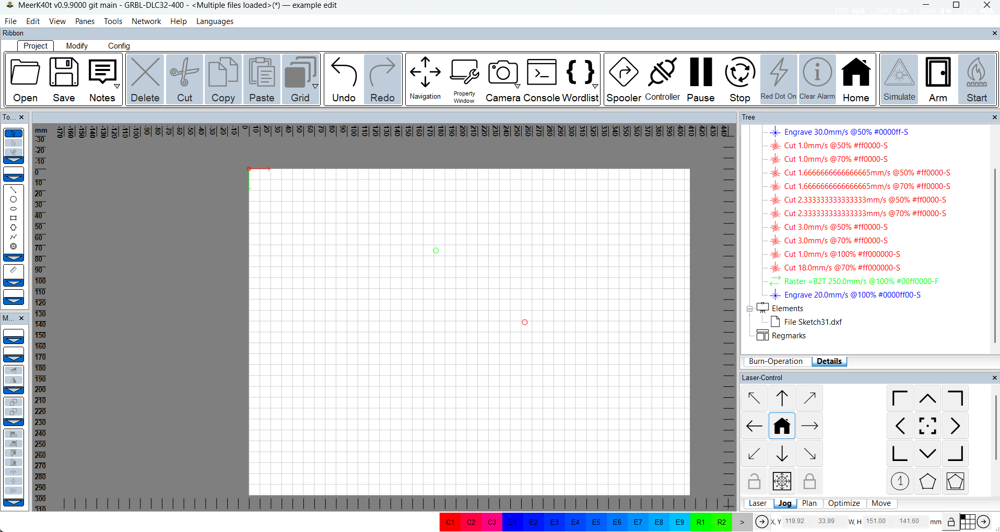
| Area | What you see | What it does |
|---|---|---|
| Title bar | MeerK40t v0.9.9000 · GRBL-DLC32-400 ·
example edit |
Active device profile and project name |
| Menu bar | File, Edit, View, Panes, Tools, Network, Help, Languages | All top-level commands |
| Ribbon → Project | Open, Save, Undo, Navigation, Console, Spooler, Home, Arm, Start | Daily shortcuts (see §0.2) |
| Ribbon → Modify | Group, Ungroup, Path Combine, Path Break Apart, booleans, flip, rotate | Unmerge = Path Break Apart (after Combine) |
| Left toolbars | Draw shapes + align/distribute | Create and lay out art |
| Scene (center) | Grid, mm rulers, red/green origin | Bed preview; click to select |
| Tree (right) | Operations · Elements · Regmarks | Job logic + file list |
| Laser-Control | Jog tab, arrows, Home, keypad | Move head without burning |
| Color bar (bottom) | C1–C3, E1–E9, R1–R2 | Quick color → operation mapping |
Typical burn path: classify shapes → Queue (Laser/Plan tab or Spooler) → Simulate → Connect → Home → Arm → Start.
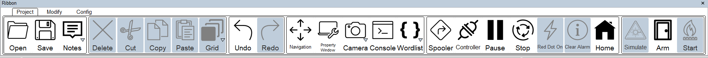
| Button | When to use |
|---|---|
| Open / Save / Notes | Project file (SVG) and job notes |
| Undo / Redo | After merge, move, delete — Ctrl+Z undoes Merge elements |
| Navigation | Opens full Navigation window (§0.8) |
| Console | Type $101=172, $HY, $$,
plan… spool |
| Spooler | See queued jobs (§0.10) |
| Controller | Live GRBL status |
| Pause / Stop | During a job |
| Clear Alarm | After GRBL ALARM — then fix cause, often
$X in console |
| Home | Homing cycle (your profile: sequential HY * *then * *HX) |
| Simulate | Path preview before burning (§0.11) |
| Arm | Software enable before fire |
| Start | Run spooled job (grey until ready) |
Modify tab (on main window shot): Path Break Apart splits combined paths; Ungroup splits groups only.
File
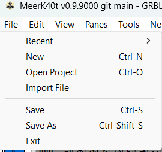
.svg saves).Edit
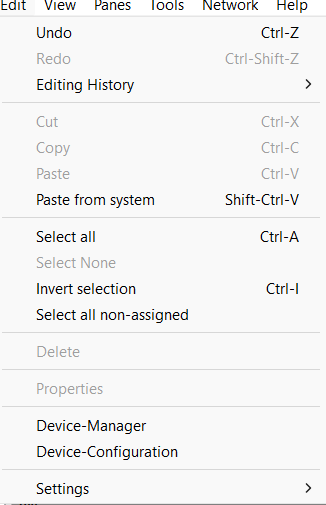
View → GUI Appearance / Render-Options
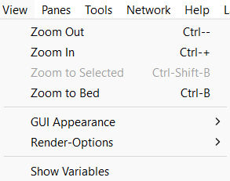
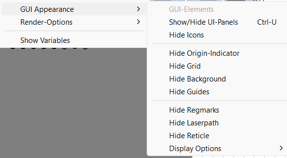
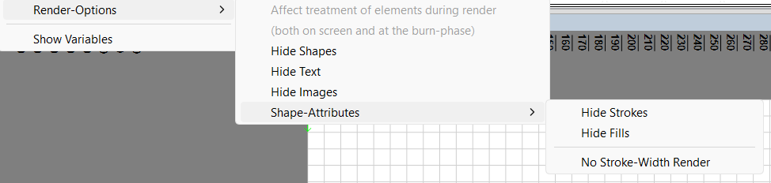
Panes
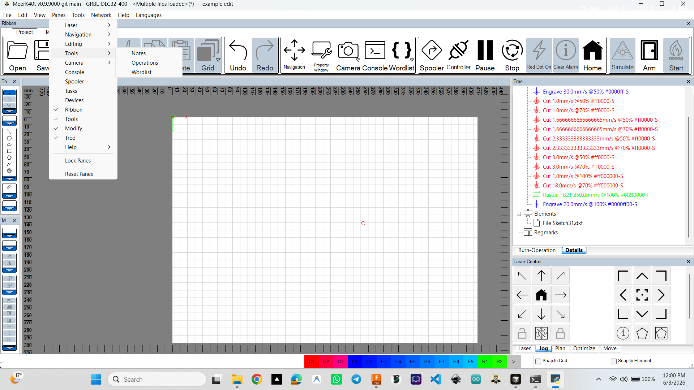
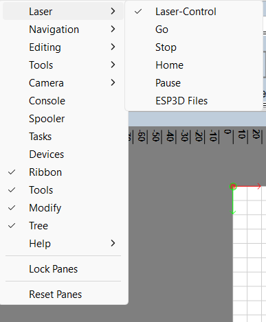
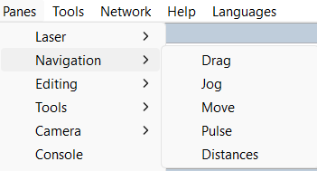
Tools
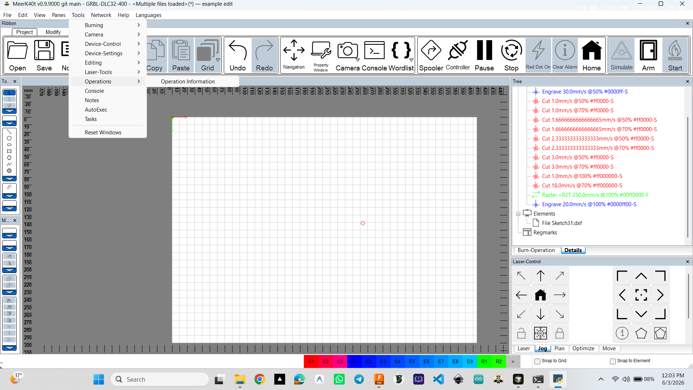
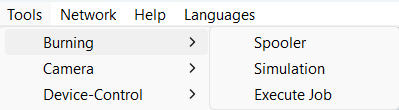
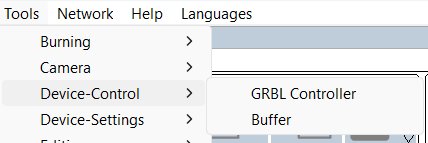
| Submenu | Opens |
|---|---|
| Burning | Spooler, Simulation, Execute Job |
| Device-Control | GRBL Controller, Buffer (lines queued to board) |
| Editing | Parameter-Test, Kerf-Test, Alignment, templates, … |
| Camera | Webcam overlay (optional) |
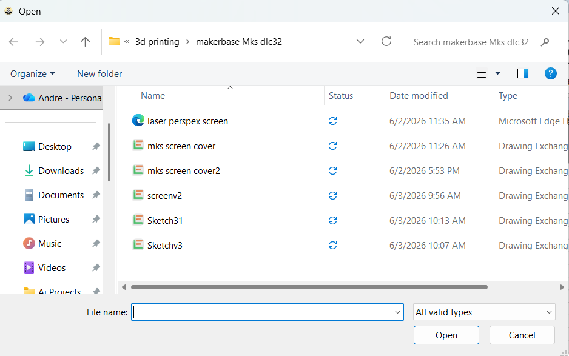
You browsed makerbase Mks dlc32 and selected
Sketch31.dxf. After import, the file appears under
Elements → File Sketch31.dxf in the Tree.
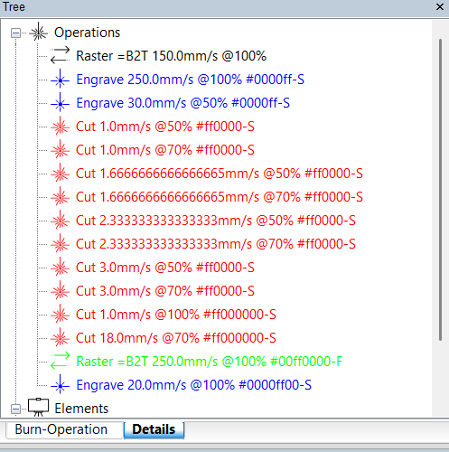
Cut 3.0mm/s @ 50% #ff0000-S = speed,
power %, colour, stroke (S) vs fill
(F).Assign Operation (right-click shape):
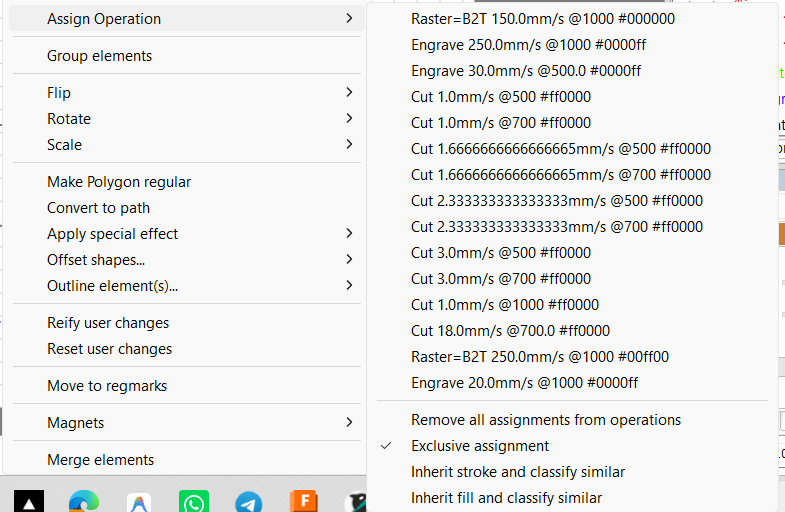
Operations right-click — insert homing/wait:
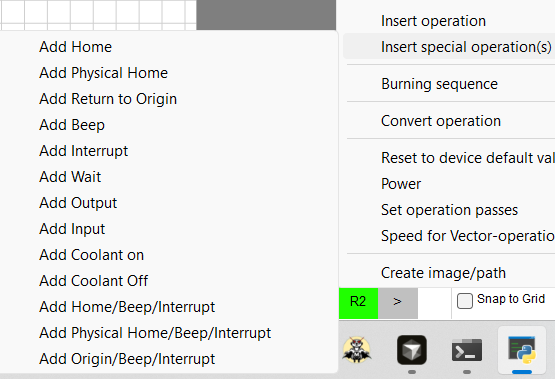
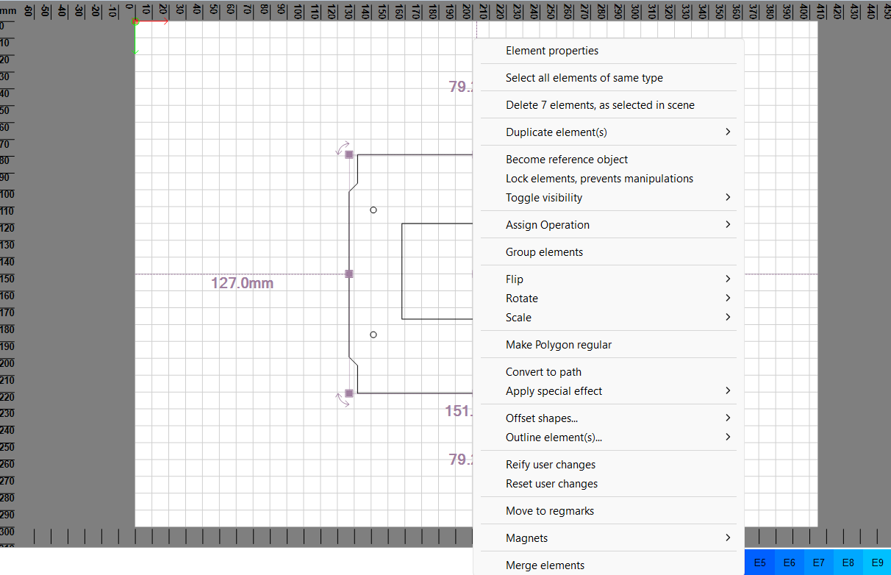
| Command | Purpose |
|---|---|
| Element properties | Stroke, fill, size |
| Assign Operation | Link to Cut/Engrave |
| Group / Merge elements | Combine selection |
| Convert to path | Editable nodes |
| Reify / Reset user changes | Apply or undo scale-rotate |
Purple handles = resize/rotate. Dimension labels (e.g. 127.0 mm) show selection size on bed.
Device tab — bed size and axis flip:
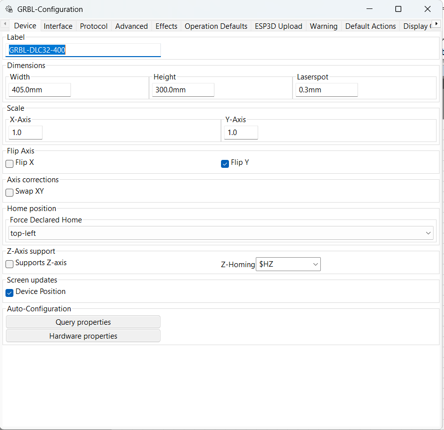
| Setting | Your value | Note |
|---|---|---|
| Label | GRBL-DLC32-400 | Matches title bar |
| Width × Height | 405 × 300 mm | Match $130 / $131 on board |
| Flip Y | ✓ | Matches machine (into bed = Y−) |
| Force home | top-left | After homing, origin top-left |
Advanced tab — homing and buffer (critical):
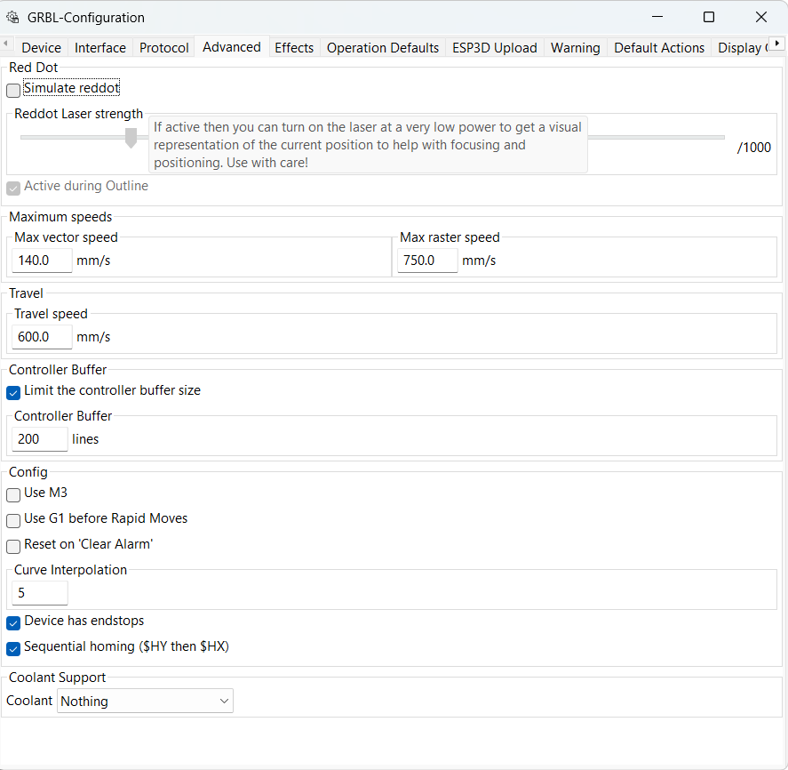
| Setting | Your value | Note |
|---|---|---|
| Device has endstops | ✓ | Required for your limit switches |
| Sequential homing ($HY then HX) * *|✓|Avoidsingle * *H on your machine | ||
| Controller buffer | 200 lines | WiFi/USB stability |
Default Actions — after every job:
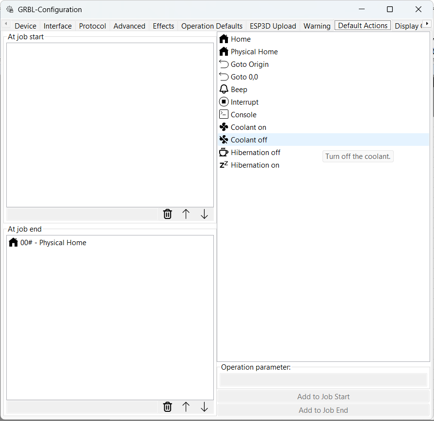
Physical Home — head
returns to switches.Other tabs captured: Effects, Display Options — see
11c-grbl-config-effects.png,
11e-grbl-config-display-options.png in image folder.
Steps/mm calibration ($100, $101) is done in the Console, not on these tabs (Device Scale stays 1.0).
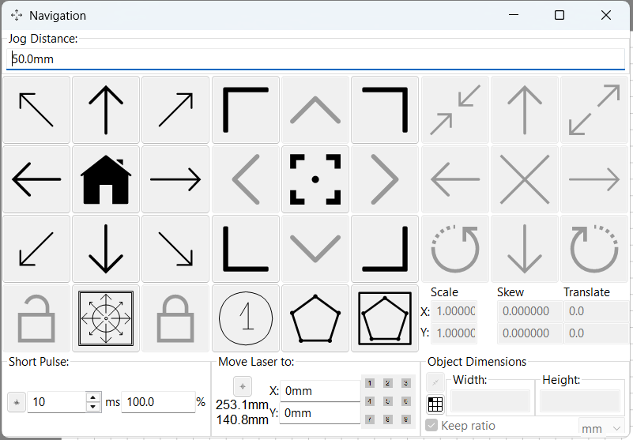
| Section | Use |
|---|---|
| Jog distance | e.g. 50 mm for calibration moves |
| Arrow pad + Home | Manual jog; centre = home |
| Short Pulse | Brief beam for alignment (chiller + WP must be OK) |
| Move laser to | Type X/Y (your shot: ~253.1 / 140.8 mm) |
| Scale / translate | Numeric transform on selection |
Same jog controls exist in docked Laser-Control → Jog on the main window.
Parameter-Test — speed vs power grid:
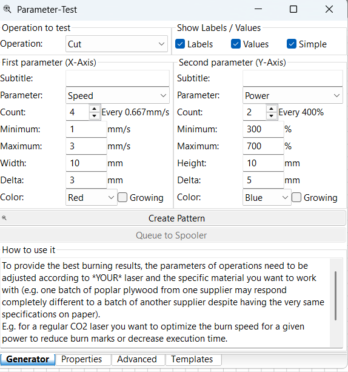
Kerf-Test — fit test pieces for beam width:
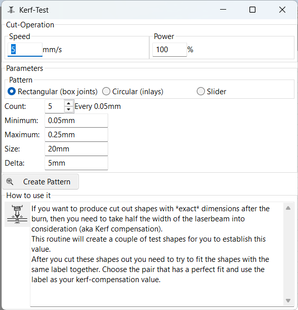
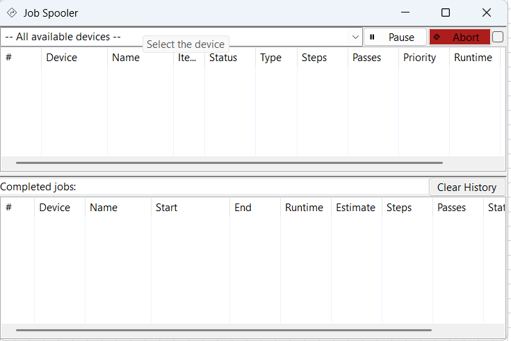
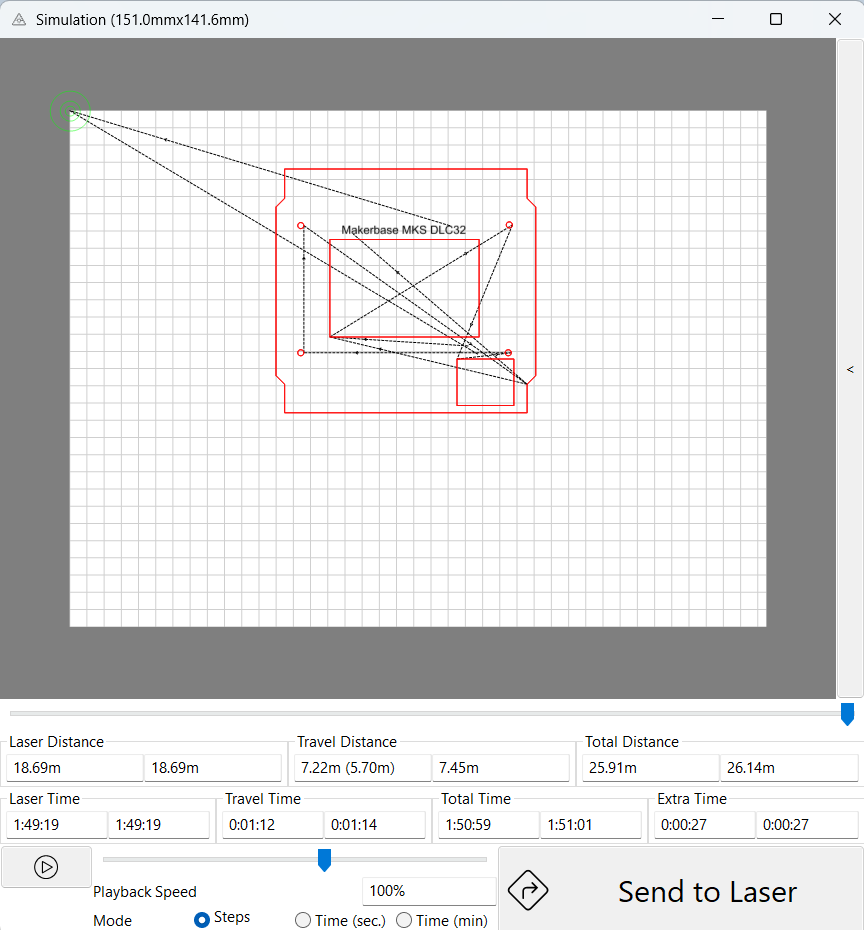
MeerK40t is built around a kernel (command processor) with a graphical shell on top.
┌─────────────────────────────────────────────────────────────┐
│ Menus · Ribbon · Status bar · Job buttons (Go/Stop/Home) │
├──────────────┬──────────────────────────────┬───────────────┤
│ Tree panes │ SCENE │ Laser / Nav │
│ Elements │ (draw, select, preview) │ (device) │
│ Operations │ │ │
├──────────────┴──────────────────────────────┴───────────────┤
│ Console (commands, GRBL $ settings, errors) │
└─────────────────────────────────────────────────────────────┘Three ideas to remember:
Nothing burns until: shapes are classified into operations → plan is built → job is spooled → you arm and start (GRBL: connect first).
python -m meerk40t
from the clone.gui/plugin.py).-w /
--simpleui)A reduced interface without the full main window. Use the full GUI for learning and for CO2 workflow.
$$).The main frame is class MeerK40t
(gui/wxmmain.py). Layout uses wxAUI —
panes dock, float, tab, and hide.
| Pane | Role |
|---|---|
| Scene | Main bed view; draw and select here |
| Ribbon | Tool buttons (line, rect, edit nodes, …) |
| Tree | Elements + Operations tabs |
| Laser | Device, connect, arm, start, plan/spool |
| Console | Type commands; see GRBL traffic |
| Position | Cursor / selection coordinates |
| Go / Stop / Pause / Home | Quick job and homing buttons (often in toolbar) |
Open or hide panes: View menu and
Pane submenu (dynamic list of registered
wxpane/* panels).
Shows project name, device name, and status hints (connection, alarms). Exact format depends on version and connection state.
| Item | Shortcut | What it does |
|---|---|---|
| New | Ctrl+N | Clears operations, elements, notes (fresh project) |
| Open Project | Ctrl+O | Replaces project from SVG; Shift = pick folder |
| Import File | — | Adds file into current project (SVG, DXF, images, …) |
| Save | Ctrl+S | Overwrite current SVG project |
| Save As | Ctrl+Shift+S | Save under new name |
| Recent | — | Recent projects (not on some frozen macOS builds) |
| Exit | — | Quit application |
Tip: Your machine workflow often uses Import for artwork and Save before every long burn session.
| Item | Shortcut | What it does |
|---|---|---|
| Undo | Ctrl+Z | Reverses last change (merge, move, delete, …) |
| Redo | Ctrl+Shift+Z | Restores undone change |
| Editing History | — | Submenu to jump to an earlier undo state |
| Cut / Copy / Paste | Ctrl+X/C/V | Clipboard inside MeerK40t |
| Paste from system | Shift+Ctrl+V | Paste from other apps (e.g. Illustrator paths) |
| Select all | Ctrl+A | Emphasize every element |
| Select None | — | Clear selection |
| Invert selection | Ctrl+I | Toggle selection |
| Select all non-assigned | — | Highlights shapes not in any operation |
| Delete | — | Remove selected tree items |
| Properties | — | Opens Properties window for selection |
| Device-Manager | — | Add/switch laser devices |
| Device-Configuration | — | Active device settings (GRBL port, speeds, …) |
| Preferences | — | Global GUI and behavior |
| Wordlist | — | Variable text lists |
| Hershey Font Manager | — | Stroke fonts for engraving |
| Keymap | — | Keyboard shortcut editor |
Merge / unmerge: There is no menu item named “Unmerge”. Use Undo after Merge elements, or right-click a path → Break Subpaths (see §8).
Controls what is drawn on the scene and in the burn preview — not the laser hardware.
GUI Appearance (examples):
Scene Appearance (examples):
If the bed looks “empty” but the tree has items, check Hide Shapes and emphasis (selection).
Lists all registered dock panels (Console, Tree, Laser, Navigation sub-panes, Snap options, etc.). Check = visible.
Window menu is built from registered
window/* modules. Grouped entries open tools such as:
Reset window positions — restores default layout when panes are lost off-screen.
| Service | Purpose |
|---|---|
| Webserver | Control MeerK40t from a browser (port in settings) |
| Telnet / consoleserver | Remote console |
| GRBL-server | Third-party apps talking GRBL through MeerK40t |
| Ruida-server | Same idea for Ruida |
Network menu — not captured in this session; use menu bar Network for Webserver / Telnet / GRBL-server.
Registered in gui/wxmeerk40t.py and related modules.
| Registration | User-facing role |
|---|---|
wxpane/ScenePane |
Scene container |
wxpane/Ribbon |
Tool ribbon |
wxpane/Tree |
Elements + Operations |
wxpane/LaserPanel |
Device + burn controls |
wxpane/Navigation |
Jog, pulse, transforms (sub-panes) |
wxpane/Position |
Live coordinates |
wxpane/opassign |
Quick operation assignment |
wxpane/Snap |
Snap distances and modes |
wxpane/magnet |
Magnetic alignment helpers |
wxpane/wordlist |
Wordlist quick access |
pane/console |
Console |
pane/laser |
Alternate laser strip |
pane/jog, pane/drag,
pane/move, pane/pulse,
pane/transform |
Navigation pieces |
Drag pane title bars to dock left/right/bottom or float. Right-click pane tab for hide/close.
The scene (gui/wxmscene.py,
gui/scene/scene.py) is your virtual
bed.
| Action | Typical input |
|---|---|
| Pan | Middle-mouse drag or dedicated pan mode |
| Zoom | Mouse wheel or zoom tool |
| Select | Click shape; shift-click add; drag rectangle |
| Move selection | Drag selected objects |
| Resize / rotate | Handles when selection tool active |
has_emphasis (something
selected).Comes from device settings (for GRBL: workspace
size, origin corner). Scene grid should match
$130/$131 soft limits after calibration.
Stroke/fill in scene reflect element attributes; operation colors may show in preview modes. GuiColors service drives themes.
Tools register under tool/* in
wxmscene.py.
| Tool ID | Name (typical) | Use |
|---|---|---|
tool/draw |
Draw | Freehand paths |
tool/rect |
Rectangle | Boxes |
tool/line |
Line | Single segments |
tool/polyline |
Polyline | Connected segments |
tool/polygon |
Polygon | Closed polygon |
tool/circle |
Circle | Circles |
tool/ellipse |
Ellipse | Ellipses |
tool/point |
Point | Mark points |
tool/text |
Text | Text boxes |
tool/linetext |
Line text | Text along a line |
tool/vector |
Vector | Vector-specific ops |
tool/measure |
Measure | Distance measurement |
tool/relocate |
Relocate | Move job origin |
tool/placement |
Placement | Place imported art |
tool/edit |
Node Edit | Edit path points |
tool/nodemove |
Node Move | Move single nodes |
tool/pointmove |
Point Move | Fine point drag |
tool/parameter |
Parameter | Edit path parameters |
tool/imagecut |
Image cut | Cut contours from image |
tool/tabedit |
Tab edit | Tabs for mechanical parts |
tool/ribbon |
Ribbon | Meta-tool on ribbon bar |
b key in tool): split path at
selected point(s) — different from Break Subpaths in
tree.Node Edit tool — activate from left toolbar; use Break on a point to split a path (see §0.1 Modify ribbon Path Break Apart for combined paths).
Left tree tab Elements lists all geometry groups.
Exact list depends on node type and lock state. Examples from
element_treeops.py:
| Action | Effect |
|---|---|
| Merge elements | Multiple shapes → one path (undo: Ctrl+Z) |
| Break Subpaths | One path → group of separate paths |
| Merge items (on group) | Children → single path |
| Lock / Unlock | Prevent edits |
| Copy / Paste | Duplicate subtrees |
| Classify | Auto-assign to operations |
| Ungroup | Split group |
| Reorder (up/down) | Tree order (can affect burn order before planner) |
Second tab Operations defines Cut, Engrave, Raster, Image op, Dots, etc.
| Term | Meaning |
|---|---|
| Operation | Laser settings + rules for a set of shapes |
| Classification | Linking elements → operations (stroke color, fill, automatic rules) |
| Re-Classify | Re-run rules after you change art |
| Unassigned | Shapes not in any operation — will not burn |
Window → Properties or Edit → Properties.
Two contexts:
Properties window — open via Edit → Properties or right-click Element properties (not in this screenshot set).
Changes apply to emphasized items. Multi-selection may show common fields only.
The Laser pane (gui/laserpanel.py) is
the control center for the active device.
| Control | Role |
|---|---|
| Device selector | Which configured laser profile |
| Connect / Disconnect | Open serial/TCP to controller |
| Arm | Permit firing (safety interlock in software) |
| Start / Execute | Run spooled job |
| Pause / Resume | Pause motion |
| Stop / E-Stop | Halt job and reset planner state |
| Queue / Plan | Build cut plan and spool |
| Hold | Reuse last plan without full rebuild (when blob exists) |
| Update plan | Refresh plan after edits |
WP interlock
satisfied.$HY then $HX on
your machine — use Navigation or configured home buttons).When queueing, MeerK40t may warn that some shapes are not assigned — inner detail may be skipped. Read the dialog; fix via Re-Classify or drag to Cut.
Unassigned-shapes warning — appears when queueing if shapes are not in any operation (see §0.5).
Colors follow themes (arm = caution, stop = red).
Window → Navigation opens jog controls.
| Sub-panel | Function |
|---|---|
| Jog | Direction buttons, continuous jog |
| Jog distance | Step size (1 mm, 10 mm, 100 mm, …) |
| Move | Go to absolute X/Y |
| Pulse | Short laser fire for alignment (with caution) |
| Transform | Scale/rotate selection numerically |
| Drag | Drag-style positioning |
GRBL note: Jog moves use controller jog mode;
calibrate $100/$101 using real measurements
(see 16-mks-dlc32-board.md).
Confined coordinates: MeerK40t may limit jog to bed — if jog “stops early”, check soft limits and homing.
Elements + Operations
→ copy → preprocess → validate → blob → [optimize] → spool
→ LaserJob on device spoolerWindow → Job Spooler — list of queued jobs, progress, cancel.
Window → Simulation — preview path order, travels, timing estimate.
Long plans may open Thread Info when threaded planning is enabled — shows background planner progress.
Execute Job / Thread Info — opens during long plan builds (Tools → Burning).
| Window | Purpose |
|---|---|
| Material Manager | Library of power/speed presets per material |
| Material Test | Grid of test burns (power/speed matrix) |
Used heavily in 17-meerkat-dlc32-workflow.md.
Material Manager — Tools → Editing (not captured).
After a test grid: pick best cell → apply settings to operation → queue real job.
Edit → Device-Manager — create profiles: GRBL, Lihuiyu, Ruida, Balor, …
Device Manager — Edit → Device-Manager (not captured).
For DLC32 you typically have one GRBL device:
192.168.x.x:8080 (WiFi bridge)Edit → Device-Configuration — speeds, bed size, flip
flags, GRBL $ passthrough, controller behavior.
See also §0.7 for Advanced and Default Actions screenshots.
Writing $$: Console shows
ok per line. A PermissionError on
“WriteFile” is MeerK40t failing to save a log on PC —
not always a board reject. Confirm with $$ readback.
Bottom Console pane — full command language.
plan0 clear copy preprocess validate blob spoolelement merge,
element subpath$101=172, $HY, $HX,
?, $X unlockwindow open SimulationConsole pane — open from Ribbon Console or Panes
menu (not captured; use for $100, $101,
$$).
See 14-console-quickref.md. Type
help and help <command> for
discovery.
Registered in gui/wxmeerk40t.py (open via
Window menu or console):
| Window | Typical use |
|---|---|
| MeerK40t | Main frame (this manual) |
| Properties | Edit selection |
| Console | Commands |
| Preferences | Global settings |
| About | Version |
| Keymap | Shortcuts |
| Wordlist | Parametric text |
| MatManager | Materials library |
| Navigation | Jog / pulse |
| Notes | Project notes |
| AutoExec | Commands on events |
| JobSpooler | Queue |
| ThreadInfo | Planner threads |
| Simulation | Path preview |
| Tips | Daily tips |
| ExecuteJob | Job execution UI |
| BufferView | Driver buffer debug |
| Scene | Secondary scene view |
| DeviceManager | Devices |
| Alignment | Align objects to each other / bed |
| HersheyFontManager | Fonts |
| HersheyFontSelector | Pick font |
| SplitImage | Large raster tiling |
| OperationInfo | Operation summary |
| Lasertool | Laser-specific utilities |
| Templatetool | Templates |
| Hingetool | Living hinge patterns |
| Kerftest | Kerf compensation tests |
| SimpleUI | Minimal UI |
| CameraInterface | Camera overlay (if plugin loaded) |
Alignment window — Tools → Editing (not captured).
View → Scene Appearance toggles bits in
draw_mode:
Render-Options affect how fills and vectors are interpreted at render and burn — only change when you understand the planner impact.
Start/stop embedded servers (see §4.6). Useful for phone/tablet control on same LAN — secure your network; anyone on the port can send commands.
Widgets along the bottom (gui/statusbarwidgets/):
| Widget area | Info |
|---|---|
| Selection | Count, size of selection |
| Position | Mouse / tool position |
| Operation assign | Quick assign emphasized → op |
| Stroke/fill | Quick style readout |
| Job progress | Spooler step fraction during burn |
Specific to your setup (16-mks-dlc32-board.md, 17-meerkat-dlc32-workflow.md):
| Topic | UI behavior |
|---|---|
| Homing | Prefer HY * *then * *HX; avoid single $H |
| Touch panel jog | Same GRBL $100/$101 as MeerK40t —
calibrate with ruler |
| Laser test on panel | Short beam normal with $32=1 (no motion) — use MeerK40t
Pulse for steady test |
| WiFi | TCP device in MeerK40t; dropouts freeze progress — USB for long jobs |
| ALARM:1 | Console $X, check ? → Pn:;
fix limits/jumpers |
| Symptom | Things to check |
|---|---|
| Panes missing | View/Pane menu; Window → reset positions |
| Cannot click Start | Connect? Arm? Spool empty? Unassigned shapes? |
| Scene empty | Hide Shapes on; zoom extents; wrong emphasis |
GRBL $ won’t save |
One client per port; use console ok; ignore PC
WriteFile error if $$ shows new values |
| Inner shapes skip | Operations tree — assign + Fill on Cut |
| Merge can’t undo | Break Subpaths or node Break |
| Slow UI | Large images; suppress non-visible elements in Preferences |
Source (your PC):
C:\Users\User\Pictures\Screenshots\Meerk40T\
Copied to repo:
images/meerk40t-ui-manual/
| File | Description |
|---|---|
01-main-window.png |
Full UI, GRBL-DLC32-400, Sketch31 project |
02-file-menu.png |
File menu |
03-ribbon-project-tab.png |
Ribbon Project tab |
04-scene-context-menu.png |
Scene selection + right-click |
05-operations-tree.png |
Operations / Elements tree |
07-navigation.png |
Navigation window |
11-grbl-config-device.png |
GRBL Configuration — Device |
11b-grbl-config-advanced.png |
GRBL Configuration — Advanced |
11c-grbl-config-effects.png |
GRBL Configuration — Effects |
11d-grbl-config-default-actions.png |
Default Actions at job end |
11e-grbl-config-display-options.png |
Display Options |
13-job-spooler.png |
Job Spooler |
14-simulation.png |
Simulation preview |
16-parameter-test.png |
Parameter-Test generator |
18-view-menu.png |
View menu |
18b-gui-appearance.png |
GUI Appearance submenu |
18c-render-options.png |
Render-Options submenu |
19-edit-menu.png |
Edit menu |
20-tools-menu.png |
Tools menu |
assign-operation-submenu.png |
Assign Operation |
file-import-dxf.png |
Import DXF dialog |
kerf-test.png |
Kerf-Test window |
operations-insert-special.png |
Operations → special commands |
panes-laser-submenu.png |
Panes → Laser |
panes-menu-overview.png |
Panes menu |
panes-navigation-submenu.png |
Panes → Navigation |
tools-burning-submenu.png |
Tools → Burning |
tools-device-control.png |
Tools → Device-Control |
full-screens/ — 19 files from Full
screensmenu/ — 52 files from MenuConsole pane, Device Manager, Material Manager, Network menu, Properties window, unassigned warning dialog, Node Edit close-up.
powershell -File "C:\Users\User\Ai Projects\meerkat\docs\meerk40t\scripts\build-ui-manual-pdf.ps1"Requires Pandoc.
| Date | Change |
|---|---|
| 2026-06-02 | v1.0 — Initial manual, placeholders, PDF scripts |
| 2026-06-03 | v1.1 — Merged Andre screenshots (71 files); §0 illustrated walkthrough |
MeerK40t is open source; UI labels may differ slightly by version
and language pack. When in doubt, trust the on-screen text and the
console help output.